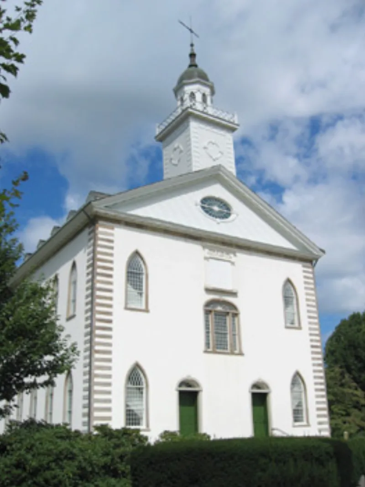

The bank Ohio refused, opened anyway on revelation
AdmittedTheir own church publications admit these facts. You can make this point from LDS sources alone.
The evidence
What was set up
In November 1836 Joseph Smith helped found a bank. It was called the Kirtland Safety Society.
Ohio refused it a charter. So in January 1837 it changed its name, to the Kirtland Safety Society Anti-Banking Company.
Then it issued its notes anyway.
What was said about it
On 6 January 1837, Wilford Woodruff wrote in his journal that Smith had "receieved that morning the word of the Lord upon the subject of the Kirtland Safety Society." Not only by the spirit, he wrote, "but even an audaible voice." If the commandments were heeded, all would be well. Warren Parrish, an officer who later left, claimed Smith prophesied it would swallow up all other banks like Aaron's rod.
What happened
The bank had far too little capital behind it. Its notes lost most of their value within weeks.
On 24 October 1837 Smith and Sidney Rigdon were each fined $1,000 and costs for illegal banking, under an Ohio statute of 1816. Smith fled Kirtland on the night of 12 January 1838.
The cost to the church
Historians put the loss at 200 to 300 members. That is roughly 10 to 15% of Kirtland.
It took about a third of the top leaders with it. Heber C. Kimball later said that for every member who stood by Joseph Smith as prophet, "there were twenty who did not."
Their answer, at full strength
FAIR and church historians make five points. The 1830s was the age of wild, unwatched banking.
Hundreds of banks went down in the Panic of 1837. The charter was refused partly for Ohio party reasons; hard-money Democrats turned down nearly every new charter that year.
Smith put in more of his own money than almost anyone, and lost it — not what a swindler does. He resigned in June 1837, and warned the Saints about the notes.
And Woodruff never wrote down what the revelation said. The grand line about swallowing up all banks comes only from Parrish, who by then had left and was hostile.
What to say
"Woodruff wrote that he heard an audible voice about the bank. What do you make of that?"


How they answer this — at its strongest
Hundreds of banks fell in the Panic of 1837, and Smith lost his own money.
FAIR and church historians argue five things.
The 1830s were the age of unregulated wildcat banking. Hundreds of banks, many of them chartered, failed in the national Panic of 1837. So the collapse reflects the economy rather than fraud.
The charter was refused for Ohio party reasons. Hard-money Democrats turned down nearly every new charter that session, and anti-Mormon feeling may have added to it. Operating as a joint-stock anti-banking company followed legal advice under law that was genuinely unsettled.
Joseph Smith put in more of his own money than almost anyone, and lost heavily. That is not the profile of a swindler. He resigned in June 1837 and warned the Saints against the notes before the worst of it.
And Woodruff's journal does not record what the revelation said. The grand line about swallowing up all banks comes only from Warren Parrish, by then a hostile ex-member with his own alleged part in the failure.
The verdict
They admit the facts: 'all would be well' was falsified within months.
The load-bearing facts are conceded in the church's own publications. The Joseph Smith Papers and the Church History Topics essay grant it all. The refused charter. The choice to operate anyway. The October 1837 fines for illegal banking. Smith's flight. And that leaders bore blame.
The revelation claim rests on a faithful source, not a hostile one. Wilford Woodruff wrote it in his own journal on 6 January 1837. The church-affiliated Woodruff Papers Project published it. Smith attached the word of the Lord, and an audible voice, to a venture that failed within months. It was ruled illegal. And 200 to 300 members left.
Their case genuinely softens the question of intent. Fraud is not shown. The Panic of 1837 was real, and Parrish deserves discounting.
It does not touch the core problem under Deuteronomy 18:21-22. A promise that all would be well was falsified by events.
Sources
- Wilford Woodruff journal, 6 Jan 1837 (Wilford Woodruff Papers)
- Transcript of Proceedings, Rounds qui tam v. Rigdon/Smith, Oct 1837 (Joseph Smith Papers)
- Introduction to the Kirtland Safety Society (Joseph Smith Papers)
- Church History Topics: Kirtland Safety Society (LDS Church)
- Warren Parrish letter, Painesville Republican, 15 Feb 1838 (repr. UTLM)
- Heber C. Kimball discourse, 23 Aug 1857, Journal of Discourses 5:171-181
- Walker, 'The Kirtland Safety Society and the Fraud of Grandison Newell' (BYU Studies)